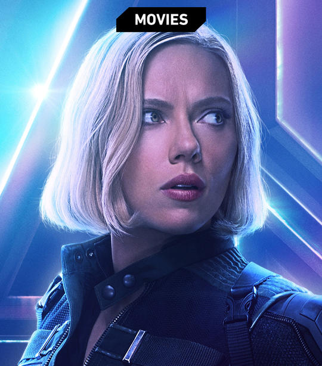
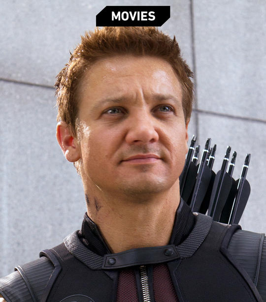
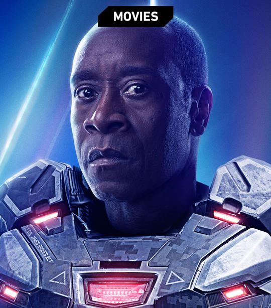

Personnages principaux

Black Widow
Black Widow
Malgré le passé en damier de la super espion Natasha Romanoff, elle est devenue l'un des assassins les plus meurtriers du SHIELD et un membre assidu des Avengers.
Malgré le passé en damier de la super espion Natasha Romanoff, elle est devenue l'un des assassins les plus meurtriers du SHIELD et un membre assidu des Avengers.

Hulk
Le Dr. Bruce Banner mène une vie coincée entre le scientifique à la voix douce qu'il a toujours été et le monstre vert incontrôlable alimenté par sa rage.
Le Dr. Bruce Banner mène une vie coincée entre le scientifique à la voix douce qu'il a toujours été et le monstre vert incontrôlable alimenté par sa rage.

Hawkeye
Hawkeye
Un tireur d'élite et ami de longue date de Black Widow, Clint Barton est l'incroyable archer des Vengeurs.
Un tireur d'élite et ami de longue date de Black Widow, Clint Barton est l'incroyable archer des Vengeurs.

Iron Man
Génie. Milliardaire. Playboy. Philanthrope. La confiance de Tony Stark n'a d'égale que ses capacités de haut vol en tant que héros appelé Iron Man.
Génie. Milliardaire. Playboy. Philanthrope. La confiance de Tony Stark n'a d'égale que ses capacités de haut vol en tant que héros appelé Iron Man.

Falcon
Avec ses ailes mécaniques caractéristiques, Sam Wilson fait équipe avec son partenaire de longue date, Captain America, en tant que Vengeur.
Avec ses ailes mécaniques caractéristiques, Sam Wilson fait équipe avec son partenaire de longue date, Captain America, en tant que Vengeur.

Scarlet witch
Notamment puissante, Wanda Maximoff s'est battue à la fois contre et avec les Avengers, en essayant de perfectionner ses capacités et de faire ce qu'elle croit être juste pour aider le monde.
Notamment puissante, Wanda Maximoff s'est battue à la fois contre et avec les Avengers, en essayant de perfectionner ses capacités et de faire ce qu'elle croit être juste pour aider le monde.

Thor
Le fils d'Odin utilise ses puissantes capacités en tant que dieu du tonnerre pour protéger sa maison, Asgard et la planète Terre.
Le fils d'Odin utilise ses puissantes capacités en tant que dieu du tonnerre pour protéger sa maison, Asgard et la planète Terre.

Black Panther
T'Challa est le roi de la nation africaine secrète et très avancée de Wakanda - ainsi que du puissant guerrier connu sous le nom de Panthère Noire.
T'Challa est le roi de la nation africaine secrète et très avancée de Wakanda - ainsi que du puissant guerrier connu sous le nom de Panthère Noire.

Captain America
Récipiendaire du sérum Super-Soldier, le héros de la Seconde Guerre mondiale, Steve Rogers, se bat pour les idéaux américains en tant que l'un des héros les plus puissants du monde et le chef des Avengers.
Récipiendaire du sérum Super-Soldier, le héros de la Seconde Guerre mondiale, Steve Rogers, se bat pour les idéaux américains en tant que l'un des héros les plus puissants du monde et le chef des Avengers.

Spider Man
Les capacités d'arachnide de Peter Parker lui confèrent des pouvoirs incroyables qu'il utilise pour aider les autres, tandis que sa vie personnelle continue de lui offrir de nombreux obstacles.
Les capacités d'arachnide de Peter Parker lui confèrent des pouvoirs incroyables qu'il utilise pour aider les autres, tandis que sa vie personnelle continue de lui offrir de nombreux obstacles.

Vision
L'androïde appelé Vision défie la physique et se bat comme un vengeur avec le pouvoir de la manipulation de la densité et son cerveau d'ordinateur sans faille.
L'androïde appelé Vision défie la physique et se bat comme un vengeur avec le pouvoir de la manipulation de la densité et son cerveau d'ordinateur sans faille.

War Machine